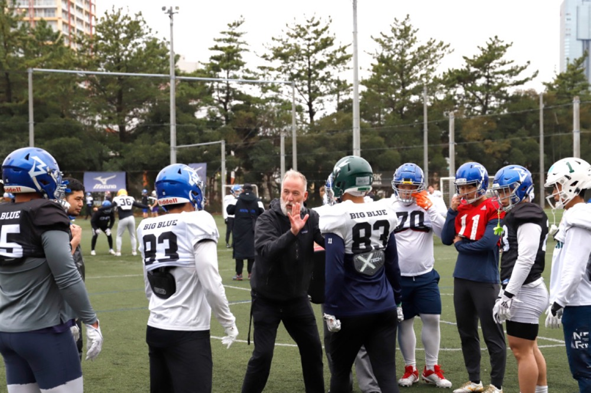
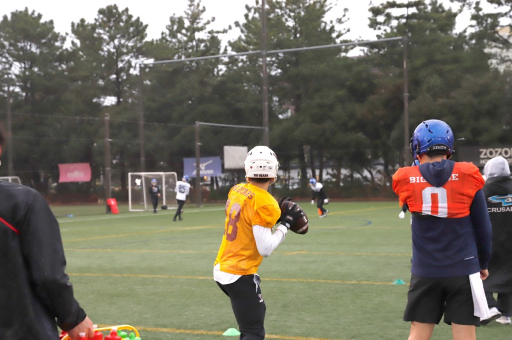
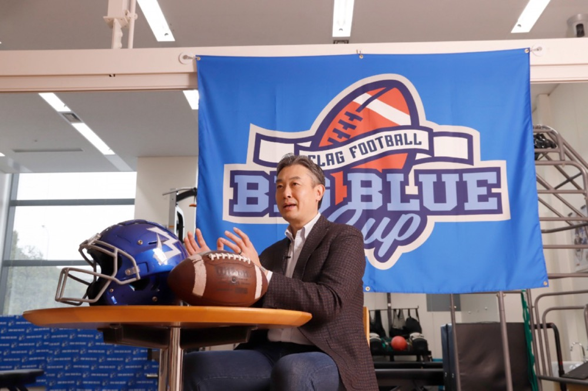
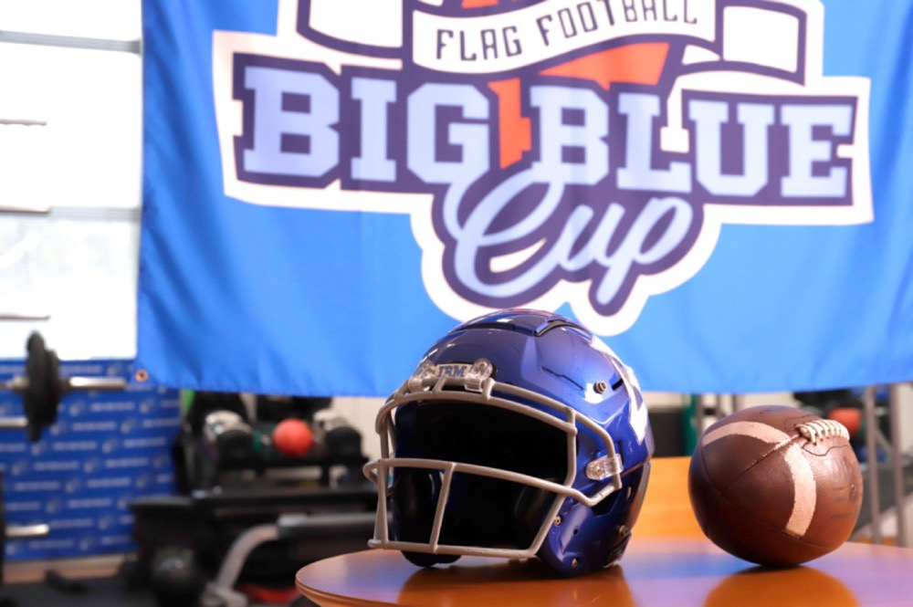

幕張の青い鎧球軍団
松本 宗樹Muneki Matsumoto
IBM BIG BLUE 代表取締役社長
1976年にIBM社内の同好会として創設。東日本実業団リーグでの経験を経て2001年にXリーグ1部へ昇格する。日本IBMスポーツ株式会社の支援のもと、千葉市美浜区を拠点とし、伝統と革新を両立するクラブチームとして運営される。現在はXリーグ1部：X1 Superに所属し、ライスボウル優勝に向け活動中。
企業サイトを見るTRACK 01
幕張の青い鎧球軍団

クォーターバックが放つロングパス。守備の隙を突いて走り抜けるワイドレシーバー。絶妙なタイミングでボールをキャッチすれば、シナリオが用意されていたかのようにスタジアムが熱狂に包まれる。その背後ではラインマンたちが重厚な肉体をぶつけ合い、目に見えない戦いを繰り広げる。まるで協奏曲のような連携プレーで、チーム一体となって勝利を目指す。アメリカンフットボールと呼ばれるその競技には、剛と柔が交差するドラマがある。
幕張新都心エリアに、青く輝くアメリカンフットボールチームがある。日本IBMグループが運営する、約50年の歴史をもつIBM BIG BLUEは現在、日本の最上位に位置する社会人リーグの”Xリーグ”1部：X1 Superに所属している強豪だ。
TRACK 02
強豪たる所以

BIG BLUEは1976年、日本IBM社内のアメフト経験者たちによって、同好会として創部されたのが始まりだ。1996年のリーグ再編によりXリーグが発足し、BIG BLUEは2部リーグからスタート。昇格のための決定的な一戦が起こったのは2001年、全選手が一丸となって、1点差の優勢を死守して勝利。創部から四半世紀を経てついに1部昇格を決めた瞬間であった。
そして2010年には元Xリーグの名ラインバッカー・山田晋三がヘッドコーチに就任。春の公式戦パールボウルで2016年に初優勝したのを機に、名実ともに東日本の強豪として認知されるようになる。
2019年には日本IBMの100％出資の子会社として日本IBMスポーツ株式会社が設立され、チーム運営力強化を専門に担わせる体制が構築された。翌年には本拠地を千葉市美浜区へ移転し、BIG BLUEはさらなる勝利を見据えて鍛錬を重ねている。


TRACK 03
「ハイブリッド型」チーム編成
BIG BLUEに、影の立役者がいる。日本IBMスポーツ株式会社の代表取締役社長、松本宗樹だ。
学生時代からアメリカンフットボールに情熱を燃やしていた松本は、日本IBM入社と同時にBIG BLUEのメンバーとして芝生に立った。以後9年間にわたり、BIG BLUEの選手として副将、さらにはキャプテンとしてチームを牽引。選手として戦場を駆け抜ける日々は、まさに己との戦いだった。
その後、引退を迎えた彼は、さらなる高みを目指して大学院でマネジメントを学ぶという選択をする。そしてチームのゼネラルマネージャーを約10年間務め、現場と経営の両面からチームを成長させる重要な役割を果たす。2024年に日本IBMスポーツ株式会社の代表として再び経営に戻り、現在は日本IBM本体の人事労務部長を務める傍ら、BIG BLUEの経営戦略や地域貢献活動を指揮している。